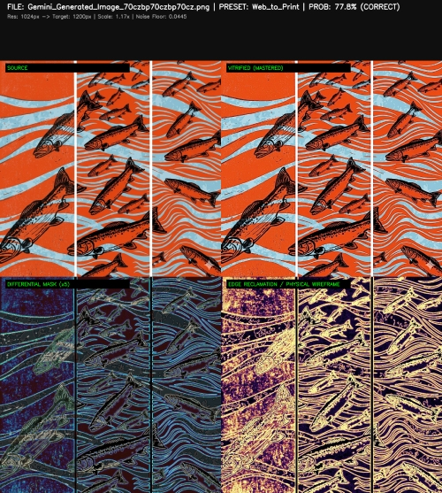

Recovering the Past. Hardening the Future. One Universal Signal.
Digital image files are engineered for screens, not physical matter. When low-resolution web uploads or synthetic graphics hit a print line, they fail because they ignore the fluid dynamics of liquid ink on woven fabric.
The legacy choices are structurally destructive: vector tracing flattens organic texture into geometric polygons, while standard algorithmic upscaling ignores material physics—resulting in white underbase halos, capillary ink wicking, and shop-floor scrap.
PROVISION1 provides a drop-in file triage node that stabilizes these assets at the gate. Operating entirely within the raster domain, it intercepts files in a localized hot folder directory to evaluate fluid density and edge geometry—executing raster-domain boundary reconstruction or shifting integrity failures to an isolated quarantine queue. It preserves 100% of the artwork's original texture while empowering human prepress operators with vector-level ink containment.

Because PROVISION1 operates on deterministic fluid dynamics rather than stochastic, generalized approximations, this technology is not an off-the-shelf commodity. Generic software samples or evaluation trials are not issued.
Implementation is executed as a localized, drop-in footprint. Provision1 delivers a site-calibrated Deterministic Triage Hot Folder Node that integrates seamlessly into your existing prepress workflow without structural network re-engineering:
Every deployment requires discrete, mathematical kernel calibration tailored precisely to the licensee's local mechanical infrastructure, accounting for specific printhead chassis geometries, local ink-set viscosity profiles, and target substrate weave density.
For enterprise print fulfillment facilities evaluating cost structures, our 30-day aggregated operational impact data maps labor reclamation and scrap prevention profiles across automated high-volume production lines.
Download Baseline Report (PDF)To accelerate regional telemetry logging for our 2026 industrial baseline, Provision1 is opening exactly five (5) slots for immediate founder-level deployment. This tier is architected to bypass traditional corporate CapEx committee review cycles by compressing engineering allocations entirely within localized operational budget thresholds:
Current Cohort Status: Open. Allocations are processed in strict chronological order of inbound verification. Once Slot 05 is finalized, standard enterprise engineering schedules resume.